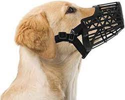

Design for Others
今回私たちの班で、日常でおかしな人の行動をまとめた結果
カラオケでマイクの変わった持ち方をする人
飼っている犬が勝手にお菓子を食べないようにする道具
この二点について話合うことになった。
私は、「飼っている犬が勝手にお菓子を食べないようにする道具」について製作することにした。
まず、折り紙、毛糸を使って簡単なデザイン設計をした。
未完成に終わっているが、ある程度想像は出来やすいものになっていると思う。

このように既存にあるものにも見えるので、少しだけ工夫してみようと考えた。